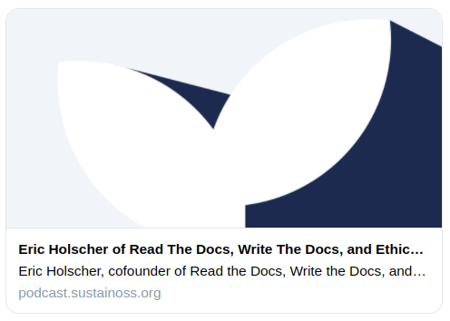
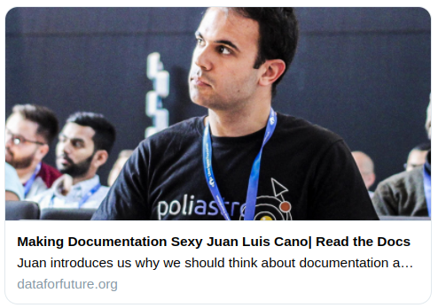
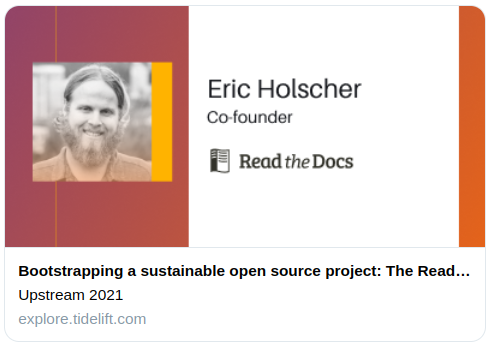

Early 2021 talks and podcasts from Read the Docs¶
During the first half of 2021 several team members of Read the Docs have talked about the company in podcasts and online events. If you want to learn more about our company directly from the people that are a core part of it, and hear our thoughts on other topics like open source sustainability and developer advocacy, this blog post is for you.
Eric @ Sustain podcast¶
Eric was the special guest of Sustain back in February, “a podcast about sustaining open source in the long haul”. Eric started by telling the story of how he and Anthony co-founded Read the Docs, talked about the Write the Docs community, described the challenges of launching EthicalAds in 2020, and discussed the opportunities of using ethical advertising to fund open source projects.
Listen to Eric online:
Juan Luis @ Data for Future podcast¶
Also in June, Juan Luis was invited for the second time to Data for Future, a podcast that seeks to “inspire positive actions towards an environmentally sustainable and socially just future through technology”. In an informal conversation, Juan Luis shared some numbers about the state of software documentation according to several surveys, promoted the Diátaxis documentation framework created by Daniele Procida, discussed his role as Developer Advocate at Read the Docs, and shared some possible opportunities for collaboration between Data Science practitioners and technical writers.
Listen to Juan Luis online:
Eric @ Upstream 2021 online conference¶
Read the Docs and EthicalAds supported Upstream 2021 in June, a one-day online event about “open source, the developers who use it, and the maintainers who make it”. Eric delivered a talk titled “Bootstrapping a sustainable open source project: The Read the Docs story”, in which he dived into some of the less known details of how Read the Docs was created, shared the different funding strategies the company attempted over the years, opened up about the dangers of burnout, and detailed the different commercial plans of Read the Docs as well as some thoughts about pricing schemes.
Watch Eric online:
Considering using Read the Docs for your next Sphinx or MkDocs project? Check out our documentation to get started!